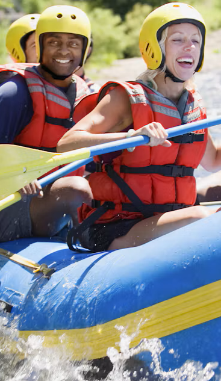

Welcome to our page for the totally real White Water Rafting Company. We are an absolutely real company, not made by a college student for a project, and our located on the Real River in Ohio. Our company makes sure to emphasize safety while encouraging fun. We provide a variety of rafting services including rafting and canoeing. We also allow for groups of up to 68.734 people.